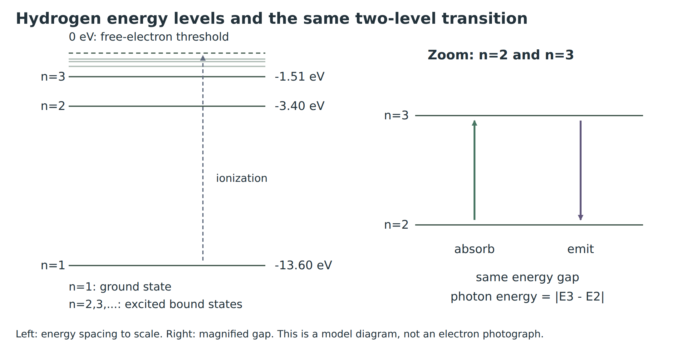

B เข้าใกล้ A แล้วชะลอและเคลื่อนย้อนกลับหรือเฉกลับใกล้แนวเดิม เพราะแรงผลักต้านการเคลื่อนที่ โดยรายละเอียดขึ้นกับแนวและอัตราเร็วที่ปล่อย
แนว 2
แนว 2: เปรียบเทียบการเบนของ B กับแนว 1
B เบนออกจากแนวเดิมและไม่ย้อนกลับแบบแนว 1 เนื่องจากไม่ได้เข้าตรงศูนย์กลางและผ่านห่าง A มากกว่า
แนว 3
แนว 3: เปรียบเทียบการเบนของ B กับแนว 2
B เบนน้อยกว่าแนว 2 เพราะผ่านห่าง A มากกว่า เมื่อควบคุมอัตราเร็วเริ่มต้นให้ใกล้เคียงกัน
A เปรียบเสมือนนิวเคลียส ส่วน B เปรียบเสมือนแอลฟา เม็ดพลาสติกใช้แทนอิเล็กตรอนในกิจกรรม เมื่อ B เข้าใกล้ A มาก แรงผลักและการเบนมักมากขึ้น กิจกรรมช่วยให้เห็นการเบนจากแรงที่ไม่ต้องสัมผัส
แบบจำลอง A ให้ประจุบวกกระจายทั่วอะตอม ส่วนแบบจำลอง B รวมประจุบวกไว้ในบริเวณเล็กมาก ผลที่พบว่าแอลฟาบางตัวเบนมุมมากสนับสนุนแบบใด และเพราะเหตุใด?
สนับสนุนแบบจำลอง B เพราะบริเวณเล็กที่รวมประจุบวกสามารถให้แรงผลักไฟฟ้ารุนแรงเมื่อแอลฟาผ่านเข้าใกล้ จึงอธิบายการเบนมุมมากได้ สอดคล้องกับแนวคิดนิวเคลียสของรัทเทอร์ฟอร์ด
นักเรียนเปลี่ยนหลอดไส้เป็นหลอด LED แล้วสรุปว่า “แหล่งกำเนิดแสงทุกชนิดต้องให้สเปกตรัมต่อเนื่องเหมือนหลอดไส้” ข้อสรุปนี้เหมาะสมหรือไม่?
ไม่เหมาะสม สเปกตรัมขึ้นกับกระบวนการกำเนิดแสง ไส้หลอดร้อนให้พื้นสเปกตรัมต่อเนื่อง แต่ LED และหลอดแก๊สมีกลไกต่างกัน จึงต้องสังเกตสเปกตรัมของแหล่งกำเนิดจริง ไม่เหมารวมจากชื่อว่าหลอดไฟ
คำถาม 9
หลอดแก๊ส A และ B มีตำแหน่งเส้นสเปกตรัมตรงกันทุกเส้นที่ตรวจพบ แต่ความสว่างของเส้นต่างกัน จำเป็นต้องสรุปว่าเป็นคนละธาตุหรือไม่? ควรเปรียบเทียบสิ่งใดเป็นหลัก?
แหล่งกำเนิด X ให้แถบสีเรียงติดกัน ส่วน Y ให้เส้นสว่างแยกบนพื้นมืด แหล่งใดสอดคล้องกับไส้หลอดร้อน และแหล่งใดสอดคล้องกับแก๊สความดันต่ำที่ถูกกระตุ้น?
X สอดคล้องกับไส้หลอดร้อนซึ่งให้สเปกตรัมต่อเนื่อง ส่วน Y สอดคล้องกับแก๊สความดันต่ำที่ถูกกระตุ้นซึ่งให้สเปกตรัมแบบเส้น ต้องพิจารณารูปแบบของสเปกตรัม ไม่ใช่สีที่มองเห็นเพียงสีเดียว
E ติดลบหมายถึงอิเล็กตรอนยังถูกยึดไว้ในอะตอม ต้องเพิ่มพลังงานจึงจะหลุดเป็นอิสระได้ พลังงานจลน์ K ยังเป็นบวก ค่าติดลบของ E ไม่ได้หมายความว่าอิเล็กตรอนหยุดเคลื่อนที่
ตอบ: n = 3 มีพลังงานสูงกว่า ส่วน n = 2 ถูกยึดเหนี่ยวแน่นกว่า เพราะต้องเติม 3.40 eV จึงหลุด เทียบกับประมาณ 1.51 eV ที่ n = 3
9. สถานะพื้น กระตุ้น และไอออไนซ์
แผนภาพระดับพลังงานและทิศการเปลี่ยนระดับจัดทำใหม่ สถานะพื้นคือ n = 1 ระดับพลังงานด้านซ้ายวางตามค่า E; ภาพลูกศรด้านขวาเป็นแผนภาพอธิบาย
ระดับสูงขึ้นกับพลังงานที่เพิ่มขึ้น
เมื่อ n มากขึ้น ระดับพลังงานสูงขึ้น ค่า E ติดลบน้อยลง เช่น −3.40 eV สูงกว่า −13.6 eV การขึ้นระดับต้องรับพลังงาน ส่วนการลงระดับปล่อยพลังงาน ระดับ n > 1 ที่ E ยังติดลบเป็นสถานะกระตุ้น ไม่ใช่อิเล็กตรอนอิสระ
สถานะพื้นคือ n = 1 มีพลังงานต่ำสุด −13.6 eV สถานะกระตุ้นคือสถานะที่มี n > 1 และอิเล็กตรอนยังอยู่ในอะตอม การไอออไนซ์คือการทำให้อิเล็กตรอนเป็นอิสระ กรณีใช้พลังงานต่ำสุด อิเล็กตรอนออกไปโดยมีพลังงานจลน์เป็นศูนย์ที่ระยะอนันต์ จึงสิ้นสุดที่ E = 0
การดูดกลืนทำให้พลังงานอะตอมเพิ่ม ส่วนการปล่อยแสงทำให้พลังงานอะตอมลด โฟตอนมีพลังงานเป็นบวกเสมอ เช่น n = 2 → 3 ต้องรับ 1.89 eV และ 3 → 2 ปล่อย 1.89 eV นี่คือจุดเชื่อมพลังงานกับสเปกตรัมที่จะคำนวณต่อในหัวข้อถัดไป
คำถาม 20
ไฮโดรเจนที่ n = 1 และ n = 4 เป็นสถานะใด? n = 4 เป็นอิเล็กตรอนอิสระแล้วหรือไม่?
จากหัวข้อพลังงานข้างต้น ไฮโดรเจนมี Eₙ = −13.6/n² eV เมื่อเปลี่ยนระดับให้กำหนดระดับเริ่มต้น i และระดับสุดท้าย f ก่อนเสมอ การเปลี่ยนแปลงพลังงานของอะตอมคือ ΔEอะตอม = Ef − Ei ส่วนโฟตอนมีพลังงานบวก

ระดับพลังงานไฮโดรเจนและการเปลี่ยนระดับคู่เดียวกันสองทิศ แผนภาพจัดทำใหม่ สถานะพื้นคือ n = 1
กระบวนการ
พลังงานอะตอม
พลังงานโฟตอน
ดูดกลืน: ต่ำ → สูง
ΔEอะตอม > 0
Eγ = Ef − Ei
เปล่งออก: สูง → ต่ำ
ΔEอะตอม < 0
Eγ = Ei − Ef
พลังงานโฟตอนกับผลต่างระดับ
\(E_\gamma=hf=\frac{hc}{\lambda}=|E_f-E_i|\)
ใช้ h = 6.626 × 10⁻³⁴ J·s, c = 3.00 × 10⁸ m/s และ 1 eV ≈ 1.60 × 10⁻¹⁹ J; ถ้าพลังงานเป็น eV ใช้ hc ≈ 1240 eV·nm ได้ ต้องใช้หน่วยให้เข้าคู่กัน
คำถาม 26
ไฮโดรเจนเปลี่ยน 3 → 2 จงหา ΔEอะตอม และ Eγ ในหน่วย eV
กำหนดระดับเริ่มต้น i = 3 และระดับสุดท้าย f = 2 คำนวณพลังงานแต่ละระดับก่อน
Experimental evidence → Bohr’s model → orbits and energy → transitions and spectra
For self-study: attempt each note area before revealing its answer. Calculations show the formula, substitution, rearrangement and units. In the Bohr sections n labels an energy level; in the grating equation m labels a diffraction order.
1. From electrons to atomic structure
Sheet 1 introduced quanta of energy. This sheet follows another chain of evidence: what is inside an atom, and why does it produce light at only certain wavelengths?
Thomson studied cathode rays to investigate the constituents of atoms.
Diagrams of atomic models and scattering paths • IPST p.59 Fig.19.4; these are not photographs of atoms.
Thomson’s study and atomic model
Study: cathode rays.
Finding: negatively charged particles called electrons are constituents of atoms.
Model: positive charge fills a sphere with electrons embedded in it. Total positive charge balances the magnitude of total negative charge, making the atom neutral.
Question 1
Why must a model of a neutral atom containing negative electrons also include positive charge?
A neutral atom has zero net charge, so its total positive charge equals the magnitude of its total negative charge. Finding electrons alone does not locate the positive charge.
The gold-foil experiment
Geiger and Marsden, under Rutherford’s direction, directed positive alpha particles at thin gold foil and detected their scattering directions through flashes on a screen. Thin foil reduces repeated scattering within the metal.
New explanatory apparatus diagram. The paths illustrate directions, not measured particle-count proportions.
Observation
Inference
Most particles pass almost straight through
Most of the atom is empty space, allowing most particles to pass through
Some particles are slightly deflected
An electric force acts on the alpha particles
Very few scatter through large angles or backward
Positive charge and nearly all mass are concentrated in a very small nucleus
Question 2
Why are the very rare backward-scattered alpha particles important for changing the atomic model?
Diffuse positive charge mainly produces small accumulated deflections. A large deflection points to a small region exerting a strong repulsive force, supporting a compact, massive, positively charged nucleus. Rare evidence can still be decisive.
Question 3
Must an alpha particle touch the nuclear surface to be deflected? Explain using the type of force.
No. Both the alpha particle and nucleus are positive, so a non-contact electric repulsion can change the trajectory before contact. A hard-ball collision picture is therefore not a literal description.
2. Magnet activity: interpreting trajectories
Adapted from the IPST activity on pp.60–61. Use five equal disc magnets, a low-friction tray and plastic beads. Stack four magnets as fixed A and use the remaining magnet as B, with like poles facing. Surround A with beads. Release B along paths 1–3 at similar initial speeds, repeating each path three times.
Initial paths above and the book’s resulting paths below • IPST pp.60–61; diagrams of an analogy experiment.
Release path of B
Observed motion and deflection
Path 1
Path 1: how does B move as it approaches A?
B approaches A, slows and reverses or turns back near its original direction because repulsion opposes its motion. Details depend on alignment and release speed.
Path 2
Path 2: compare B’s deflection with path 1.
B is deflected but does not reverse as in path 1: it is off-centre and passes farther from A.
Path 3
Path 3: compare B’s deflection with path 2.
B deflects less than in path 2 because it passes farther from A, with similar initial speed.
A represents the nucleus, B an alpha particle, and the beads represent electrons in this activity. A closer approach generally gives stronger repulsion and a larger deflection. The analogy makes non-contact deflection visible.
Question 4
Give at least one limitation of the magnet analogy for alpha scattering.
Real alpha–nucleus repulsion is electric; the analogy is magnetic and has friction and finite magnet size. It illustrates repulsion and deflection but does not quantitatively reproduce actual scattering paths or probabilities.
Question 5
Model A spreads positive charge throughout the atom; model B concentrates it in a tiny region. Which is supported by rare large-angle alpha scattering, and why?
Model B: concentrated positive charge can produce strong electric repulsion during a close approach, explaining large deflections and supporting Rutherford’s nucleus.
3. Before observing spectra
After establishing the nucleus, we study how atoms absorb or emit energy by observing their spectra.
Water-wave review: path difference and interference
Consider two coherent water-wave sources S₁ and S₂ with the same frequency and initially in phase. Their waves can travel different distances to one observation point. They may arrive crest with crest, or crest with trough.
Schematic review, not experimental photography. Solid lines represent crests and dashed lines troughs. Use the stated path lengths; do not measure the drawing.
Let \(r_1=S_1P\), \(r_2=S_2P\), and let \(\Delta\) be their path-length difference.
\(\Delta=|r_2-r_1|\)
Constructive: the waves arrive in phase, crest with crest or trough with trough.
\(\Delta=m\lambda,\qquad m=0,1,2,\ldots\)
Destructive: a crest meets a trough. The resulting amplitude decreases; complete cancellation requires equal amplitudes.
\(\Delta=\left(m+\frac12\right)\lambda\)
At P, \(|5\lambda-4\lambda|=\lambda\), giving constructive interference. At Q, \(|4.5\lambda-4\lambda|=\lambda/2\), giving destructive interference. These conditions assume initially in-phase sources.
Connecting to a grating: light from neighbouring openings superposes in the same way. For normal incidence and observation far compared with the slit spacing, \(\Delta\approx d\sin\theta\). Bright lines satisfy \(d\sin\theta=m\lambda\); different wavelengths have maxima at different angles.
Schematic grating separation: blue and red are representative colours. Angle θ is measured from the normal, not from the grating plane.
How a grating separates light
Light diffracts through the narrow openings. Light from many openings interferes constructively in certain directions.
Different wavelengths produce bright lines at different angles, separating the colours. The central direction is the zero order.
Question 6
Identify the central direction and the line from which θ is measured.
The central direction is the undeviated direction, normal to the grating plane. θ is the angle between that normal and the diffracted light.
Question 7
How can a spectrum help us study atomic energy?
Light frequency gives photon energy through ε = hf. Discrete frequencies require an atomic model explaining why only particular energy differences are involved.
4. Activity 19.1: spectra of excited gases
Aims of the experiment
Compare the continuous spectrum of a hot filament with the line spectra of H and Ne discharge tubes.
Measure first-order positions on both sides and calculate their wavelengths using a grating.
Use the wavelength pattern as evidence of discrete atomic energy changes, preparing the connection to \(E_\gamma=hc/\lambda\).
Measured: D, left/right distances x, and the grating’s stated line density. Calculated: mean x̄, slit spacing d, sinθ and wavelength λ.
Equipment: a spectral-tube power supply, hydrogen and neon tubes, a grating of at least 5300 lines per centimetre, and a metre rule. First view an incandescent lamp through the grating, then each gas tube. The teacher handles the high-voltage supply; do not touch hot tubes.
Tube, ruler, grating and measurement geometry • IPST p.63.Geometry of the existing apparatus. OP is the line of sight to the apparent spectral-line position on the scale, not a second gas tube. Measure θ at O from the central normal OC.
Align the ruler’s midpoint with the tube at the same height. Place the grating about D = 1 m perpendicularly from the ruler. Observe first-order lines on both sides. Measure xleft and xright from the centre to the same colour and use their mean x̄. Record the actual D and grating line density.
2. Average the line positions: left and right x are positive distances from the centre to the same colour and order. Do not average signed coordinates on opposite sides.
\(\bar x=\frac{x_{\rm left}+x_{\rm right}}2\)
3. Use the triangle: x̄ is opposite θ, D is adjacent, and OP is the hypotenuse.
This activity uses first order \(m=1\); the sample data use \(D=100\,\mathrm{cm}\). Give D and x̄ the same unit so their ratio is dimensionless. With d in m, λ is in m; multiply by \(10^9\) for nm.
Check: \(\tan\theta=\bar x/D\), not sinθ. Some sample rows have x̄/D ≈ 0.37, so use the full triangle rather than an unchecked small-angle approximation. Here m denotes diffraction order; it is not the electron mass used later.
Activity record
Record actual D, grating density, and the colours/positions observed for H and Ne. If no experiment was performed, state that the sample data below are used.
Results depend on the apparatus and readings. State units for D, xleft and xright and distinguish H from Ne. Do not present sample data as the student’s own measurements.
Calculation sample adapted from teacher-guide p.57, with D = 100 cm and 5300 lines/cm made explicit to match the geometry. These are not newly measured student results. Colour names are approximate; results are not high-precision reference wavelengths.
Gas / colour
xleft (cm)
xright (cm)
H / red
38
36
H / cyan
27
27
H / blue
23
24
Ne / red
37
37
Ne / orange
35.5
35.5
Ne / yellow
33.5
34
Calculate from the sample data
For each gas/colour, find x̄ and the wavelength from the sample readings and show substitution. Use the same units for D and x, then convert the wavelength to nm.
Gas / colour
Mean distance and wavelength calculation
H / red
Given D = 100 cm, m = 1 and d = 1.887 × 10⁻⁶ m. First average the two readings.
Answer: λ ≈ 603 nm. The distance ratio is dimensionless because x̄ and D both use cm. Convert using 1 m = 10⁹ nm.
Spectra from a filament lamp and a gas tube
Schematic source-to-spectrum comparison: a hot filament and excited hydrogen. Colours and intensities are illustrative.
Continuous band and H/Ne line spectra • IPST p.65 Fig.19.6. Compare line positions along the wavelength axis.
A continuous spectrum covers an unbroken range, as from a hot lamp filament. A line spectrum has selected wavelengths, as from excited low-pressure hydrogen. Different patterns indicate different atomic energy structures.
Question 8
A student replaces the filament lamp with an LED and claims that every light source must give the same continuous spectrum as a hot filament. Is that justified?
No. Spectra depend on how light is produced. A hot filament gives a continuous background; LEDs and gas tubes operate differently. Observe the actual source rather than generalizing from the word “lamp”.
Question 9
Gas tubes A and B have matching positions for every detected spectral line, but different line brightness. Must they contain different elements? What should be compared first?
Not necessarily. Brightness also depends on excitation and detection conditions. Compare the pattern of line positions or wavelengths with reference data, rather than relying only on brightness or line count.
Summary of calculated results
Transfer each calculated wavelength to the table.
Gas / colour
Mean distance x̄ (cm)
λ (nm)
H / red
37
655
H / cyan
27
492
H / blue
23.5
432
Ne / red
37
655
Ne / orange
35.5
631
Ne / yellow
33.75
603
Question 10
The sample data give a hydrogen red line near 655 nm, while a reference value is about 656 nm. Does this alone disprove the model? Explain in terms of measurement.
No. Consider ruler resolution, line-position readings, D and the grating density. These sample values are approximate. A model is tested against several lines while accounting for measurement uncertainty.
5. Emission and absorption spectra
Photograph of the visible hydrogen spectrum: real separated light lines, not electron orbits • Jan Homann (2009), CC BY-SA 3.0 • Wikimedia Commons: Visible spectrum of hydrogen.
Schematic emission and absorption spectra. Line positions illustrate the comparison; intensities are not measured data.
Emission spectrum
An excited gas emits photons at particular wavelengths, producing separate bright lines on a dark background.
Absorption spectrum
When continuous light passes through a gas, atoms in suitable initial states absorb particular wavelengths. Dark lines appear within the continuous band along the beam direction.
Question 11
Why do absorption and emission between the same two levels have the same wavelength?
Absorption and emission between the same pair of levels: an upward arrow denotes absorption; a downward arrow denotes emission.
The energy gap is the same in either direction. Equal photon energy gives equal wavelength through Eγ = hc/λ. Absorption additionally requires atoms to occupy the appropriate initial level.
Question 12
Source X gives an unbroken colour band; Y gives separate bright lines on a dark background. Which matches a hot filament, and which an excited low-pressure gas?
X matches a hot filament and a continuous spectrum. Y matches an excited low-pressure gas and a line spectrum. Identify the spectral pattern rather than a single apparent colour.
6. Bohr’s postulates: why only certain states?
Hydrogen has one proton and one electron, making it a simple system for calculation and spectral comparison. In this derivation the proton is fixed; nuclear motion is neglected.
Bohr used an orbital model to explain hydrogen’s line spectrum, adding the following conditions.
Angular momentum review
Radius, momentum and angular-momentum vectors for circular motion • IPST p.67.
For a circular orbit, the angular-momentum magnitude is L = mvr, where m is electron mass, v is speed and r is orbital radius.
Bohr proposed that allowed orbits have \(mvr\) equal to an integer multiple of \(h/(2\pi)\): \(h/(2\pi),\ 2h/(2\pi),\ 3h/(2\pi)\), with \(n=1,2,3,\ldots\). This condition is a postulate of the model.
Angular-momentum condition
\(L=mvr=\frac{nh}{2\pi},\quad n=1,2,3,\ldots\)
Postulate 2: an electron in an allowed orbit does not radiate. A transition absorbs or emits a photon matching the level difference; emission from a higher to a lower level gives hf = Ei − Ef.
Question 13
Which of n = 0, 1.5 and 3 can label an allowed Bohr orbit? Is the valid choice a ground or an excited state?
Only n = 3 is allowed: n must be a positive integer. It is an excited state; n = 1 is the ground state. Here n is not a count of emitted photons.
7. Deriving allowed orbital radii
The electric force points inward; velocity is tangential • IPST p.69 Fig.19.8.
Let k be Coulomb’s constant, e the magnitude of electron charge, and m the electron mass.
1. The electric force provides the centripetal force
The radii for n = 1, 2, 3 have ratio 1 : 4 : 9 • IPST p.70 Fig.19.9.
Question 14
For hydrogen in Bohr’s model, compare the orbit at \(n=4\) with the orbit at \(n=2\). Find \(r_4/r_2\) by writing and dividing the two radius formulas, then state the factor by which the radius changes.
The requested ratio is new radius ÷ original radius. Use the hydrogen radius formula.
\(r_n=a_0n^2\)
\(r_4=a_0(4)^2=16a_0,\qquad r_2=a_0(2)^2=4a_0\)
\(\frac{r_4}{r_2}=\frac{16a_0}{4a_0}=4\)
The new radius is four times the original radius. The common a₀ cancels; its numerical value is unnecessary.
Question 15
A hydrogen orbit has radius 36a₀. Find n and explain why a negative value is excluded.
Use the radius formula, then divide both sides by a₀.
\(r_n=a_0n^2\)
\(36a_0=a_0n^2\quad\Rightarrow\quad n^2=36\)
\(n=\sqrt{36}=6\)
Answer: n = 6. Bohr’s state label must be a positive integer, so −6 is excluded.
Question 16
An electron in hydrogen is at n = 5. Find its orbital radius in m and nm.
Given n = 5 and a₀ = 5.29 × 10⁻¹¹ m, use the hydrogen radius formula.
Negative E means the electron is bound to the atom: energy must be added to free it. Kinetic energy K is still positive. Negative E does not mean the electron has stopped moving.
Answer: n = 3 has higher energy. n = 2 is more tightly bound: ionization requires 3.40 eV rather than about 1.51 eV.
9. Ground state, excitation and ionization
New energy-level and transition diagram. The ground state is n = 1. Left-hand levels follow E; right-hand arrows are explanatory diagrams.
Higher levels and increasing energy
As n increases, the energy level rises and E becomes less negative: −3.40 eV is higher than −13.6 eV. Moving upward requires energy; moving downward releases energy. A level with n > 1 and negative E is an excited bound state, not a free electron.
The ground state is n = 1 at −13.6 eV. Excited bound states have n > 1. Ionization frees the electron. At threshold, the electron has zero kinetic energy at infinite separation, so the final total energy is E = 0.
Absorption raises atomic energy; emission lowers it. Photon energy is always positive. For example 2 → 3 absorbs 1.89 eV, while 3 → 2 emits 1.89 eV. This links energy levels to the spectrum calculations in the following sections.
Question 20
Classify hydrogen at n = 1 and n = 4. Is the n = 4 electron already free?
The ground state has the lowest allowed label \(n=1\); \(n=4>1\) is excited. Check whether it is still bound.
\(E_4=-\frac{13.6}{4^2}=-0.850\ \mathrm{eV}<0\)
Answer: n = 1 is ground; n = 4 is excited and still bound. A further 0.850 eV is required to reach E = 0.
Question 21
Starting at the ground state, how do energy transfers of 10.2 eV and 13.6 eV differ in this model?
Excitation reaches another bound level; ionization reaches the threshold E = 0.
From the energy section above, hydrogen has Eₙ = −13.6/n² eV. Always identify initial level i and final level f first. The atom’s change is ΔEatom = Ef − Ei; photon energy is positive.
Hydrogen energy levels and both directions of the same transition. Newly drawn diagram; ground state n = 1.
Process
Atomic energy
Photon energy
Absorption: lower → higher
ΔEatom > 0
Eγ = Ef − Ei
Emission: higher → lower
ΔEatom < 0
Eγ = Ei − Ef
Photon energy and a level difference
\(E_\gamma=hf=\frac{hc}{\lambda}=|E_f-E_i|\)
Use h = 6.626 × 10⁻³⁴ J·s, c = 3.00 × 10⁸ m/s and 1 eV ≈ 1.60 × 10⁻¹⁹ J. With energy in eV, hc ≈ 1240 eV·nm is convenient. Keep units consistent.
Question 26
Hydrogen undergoes 3 → 2. Find ΔEatom and Eγ in eV.
Initially i = 3 and finally f = 2. Calculate both level energies first.
The atom loses about 1.89 eV and emits a photon with positive energy 1.89 eV.
Question 27
Hydrogen emits a photon in \(n=3\to2\). Use the preceding photon energy \(1.889\,\mathrm{eV}\) and \(hc\approx1240\,\mathrm{eV\,nm}\) to find its wavelength in nm and approximate colour.
Use Eγ ≈ 1.889 eV from the preceding question and hc ≈ 1240 eV·nm. Rearrange first.
A photon is absorbed. Its energy and wavelength match 3 → 2 because the same two levels are involved. The atom must initially be at n = 2.
12. Direct transitions and cascades
An excited atom need not descend one level at a time. In this energy-level model it may return from n = 3 directly by 3 → 1 or by the cascade 3 → 2 → 1. Individual photon energies differ, but total released energy is the same.
New diagram comparing 3 → 1 with 3 → 2 → 1. Each transition arrow corresponds to one photon in this model.
Question 29
For one atom starting at n = 3, how many photons are emitted along each path?
Direct 3 → 1 gives one photon. Cascade 3 → 2 → 1 gives two. One atom in one decay event does not emit every line from all possible paths.
Question 30
Show that the two cascade photons have the same total energy as the direct photon.
For each emitted photon subtract the lower-level energy from the upper-level energy.
The totals agree by energy conservation. Add energies, not wavelengths.
Question 31
If many atoms start at n = 3 and both paths occur, how many distinct lines can appear? List the transitions.
Three lines: 3 → 1, 3 → 2 and 2 → 1. This describes an ensemble over many events, not the photon count from one atom along one path.
13. Grouping spectral lines into series
Hydrogen emission series group transitions sharing the same final lower level. For example, 3, 4, 5, … down to 2 all belong to the Balmer series despite different initial levels.
Book diagram grouping series transitions • IPST p.75. This is a model diagram, not a photograph of orbits.
Series
Lower level nℓ
Upper level nu
Region
Lyman
1
2, 3, 4, …
Ultraviolet (UV)
Balmer
2
3, 4, 5, …
Visible and ultraviolet (UV)
Paschen
3
4, 5, 6, …
Infrared (IR)
Brackett
4
5, 6, 7, …
Infrared (IR)
Pfund
5
6, 7, 8, …
Infrared (IR)
Plot made from NIST reference line positions. Panels have separate axis ranges. UV and IR are plotted rather than shown as visible colours; line height is not measured intensity.
Question 32
Name the series and radiation region for 5 → 2, 4 → 1 and 6 → 3.
5 → 2: Balmer, this particular line is visible; 4 → 1: Lyman, UV; 6 → 3: Paschen, IR. Classify by the final lower level, not the initial level alone.
Each line corresponds to a pair of levels. Measured wavelengths test a model: agreement across many lines supports it. A drawn orbital diagram by itself is not experimental evidence.
14. Deriving the Rydberg and Balmer equations
Let nu be the quantum number of the upper level and nℓ that of the lower level, with nu > nℓ. For emission, the atom starts at nu and finishes at nℓ. Let A = 13.6 eV, approximately 2.18 × 10⁻¹⁸ J, for the hydrogen model.
From the energy relations above, A = mk²e⁴/(2ℏ²), with ℏ = h/(2π), so the coefficient is:
\(R=\frac{A}{hc}=\frac{2\pi^2mk^2e^4}{h^3c}\)
The textbook writes R_H and uses approximately 1.0974 × 10⁷ m⁻¹. The −13.6/n² eV energies are rounded, so their last digits can differ from a direct R_H calculation. The small difference comes from rounding the constants.
Absorption between the same pair uses the same gap. Keep nℓ and nu as lower/upper labels while stating that the atom begins at the lower level. This convention avoids a negative wavelength.
Question 33
Hydrogen emits a photon during \(n=4\to2\). A student writes \(\frac1\lambda=R_H\left(\frac1{4^2}-\frac1{2^2}\right)\). Identify the lower and upper levels, correct the equation, and show why \(1/\lambda\) is positive.
The upper initial level is nᵤ = 4 and the lower final level is nℓ = 2. Put the lower-level reciprocal term first.
Not visible under the stated convention. It is a Balmer line on the UV side of that boundary.
Longest wavelength and the short-wavelength limit
A hydrogen electron drops from \(n=5\) to \(n=2\), emitting one photon. Both parts of Example 1 use this same transition. Take \(R_H=1.0974\times10^7\,\mathrm{m^{-1}}\).
The limit is about 364.5 nm, UV, shorter than the 3 → 2 line near 656 nm.
16. Problems: identify the initial state
This hypothetical atom has the levels shown. Use these given values for the problem.
New diagram for the adapted problem. Vertical spacing represents energy, not spatial separation.
Question 36
The hypothetical atom shown starts at n = 2. Find the photon energy emitted on returning to its ground state, and explain why −13.6/n² eV should not be used.
Read the given hypothetical levels: E₂ = −4 eV initially and E₁ = −10 eV finally.
\(E_\gamma=E_i-E_f\)
\(E_\gamma=(-4)-(-10)=6\ \mathrm{eV}\)
Answer: an emitted 6 eV photon. Use the supplied levels; the hydrogen formula does not describe this hypothetical atom.
The specified paths are two possible routes, not a claim that no others exist.
Question 37
Hydrogen starts at n = 5. Consider the two specified routes: 5 → 1 and 5 → 2 → 1. Calculate each transition wavelength and identify its route.
Transition
Calculation and path
5 → 1
Emission 5 → 1: calculate the two level energies, then their positive difference.
The 1.89 eV photon matches; 2.00 eV does not. The atom does not automatically absorb part and return the excess. This assumes single-photon line absorption without linewidth effects.
Question 39
A hydrogen photon of about 2.55 eV is emitted in a transition ending at n = 2. Find the initial level.
Given Eγ = 2.55 eV and nℓ = 2, find the initial upper level nᵤ > 2.
Answer: the initial level is n = 4, giving 4 → 2. Check: E₄ − E₂ = −0.85 − (−3.40) = 2.55 eV.
17. Bohr’s limitations and electron probability clouds
Bohr’s model explains hydrogen’s main energy levels and spectrum, but not general multi-electron atoms or all spectral details. Non-radiation in an orbit is postulated rather than fully explained by classical mechanics.
Quantum mechanics uses a mathematical function called a wavefunction to calculate the probability of finding the electron in different regions. It does not assign definite planetary paths. Discrete allowed energies remain possible without Bohr-style orbits.
Radial probability plot and dot representation for hydrogen’s ground state • IPST p.78 Fig.19.13. These represent probability, not a photograph or trajectory.
Each dot represents a possible electron detection in repeated measurements. Denser dots show a greater chance of detection, rather than an electron broken into fog or many electrons.
The left graph combines all directions at each distance from the nucleus. Comparing thin spherical shells of equal thickness, detection is most likely near r = a₀. The peak does not mean certainty at that distance or describe the probability at a single point.
Four spatial patterns for n = 2 from the additional-reading box • IPST p.79, cropped figure and caption.
At n = 2 there is one spherical spatial pattern (2s) and three differently oriented dumbbell-like patterns (2p). The book’s four patterns exclude spin. Thus n alone does not specify the entire spatial state. A wavefunction provides the mathematical probability description, studied further at higher levels.
Question 40
A student says, “The electron moves as several fog rings, and at r = a₀ we must find it.” Correct this statement.
A cloud represents detection probability, not a fog substance or a trajectory. A radial-probability peak does not mean 100% certainty and does not specify a point on a circular orbit.
Question 41
Which Bohr idea remains useful, and which should not be treated as a literal quantum description?
Discrete energies and the connection between level gaps and photons remain useful. Definite circular trajectories and exact positions at every moment do not. Quantum mechanics describes states and probabilities.
When reading a spectrum, ask: which atom, which initial state, absorption or emission, which pair of levels, what energy gap, and what wavelength? Then classify the series by the lower level.